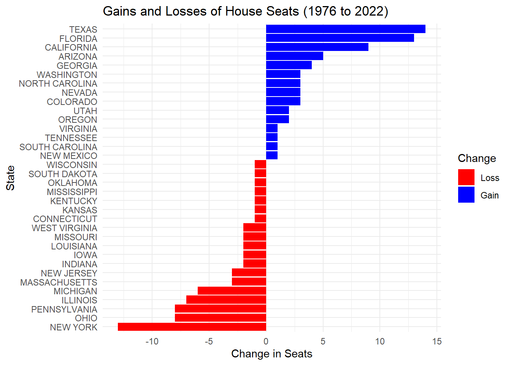

# Define the path to the CSV filecsv_file_path <-"C:/Users/zhuol/OneDrive/Documents/STA9750-2024-FALL/congressional_shapefiles/1976-2022-house.csv"# Check if the CSV file existsif (file.exists(csv_file_path)) {# Read the CSV file house_1976_2022 <-read.csv(csv_file_path)}
Show the code
# Define the path to the CSV filecsv_file_path_2 <-"C:/Users/zhuol/OneDrive/Documents/STA9750-2024-FALL/president_data/1976-2020-president.csv"if (file.exists(csv_file_path)) {# Read the CSV file president_1976_2020 <-read.csv(csv_file_path)}
# Load necessary librarylibrary(httr)# Create directory for UCLA shapefilesucla_dir <-"C:/Users/zhuol/OneDrive/Documents/STA9750-2024-FALL/data/UCLA_congress"dir.create(ucla_dir, showWarnings =FALSE, recursive =TRUE)# Function to download specific UCLA shapefilesdownload_ucla_shapefiles <-function(sessions, base_url) {for (session in sessions) { file_name <-paste0("districts", sprintf("%03d", session), ".zip") url <-paste0(base_url, file_name) destfile <-file.path(ucla_dir, file_name)# Attempt to download the file without error handling response <-GET(url, write_disk(destfile, overwrite =TRUE)) }}# Define the base URL for UCLA shapefilesucla_base_url <-"https://cdmaps.polisci.ucla.edu/shp/"# Specify the sessions for districts 093 to 112sessions_to_download <-93:112# Download the specified UCLA shapefilesdownload_ucla_shapefiles(sessions_to_download, ucla_base_url)
# Load necessary librarylibrary(httr)# Create directory for Census shapefilescensus_dir <-"C:/Users/zhuol/OneDrive/Documents/STA9750-2024-FALL/data/census_congress"dir.create(census_dir, showWarnings =FALSE, recursive =TRUE)# Function to download Census shapefiles systematicallydownload_census_shapefiles <-function(urls) {for (url in urls) { file_name <-basename(url) destfile <-file.path(census_dir, file_name)# Attempt to download the file without error handling response <-GET(url, write_disk(destfile, overwrite =TRUE)) }}# Define URLs for Census shapefilescensus_shapefile_urls <-c("https://www2.census.gov/geo/tiger/TIGER2014/CD/tl_2014_us_cd114.zip","https://www2.census.gov/geo/tiger/TIGER2015/CD/tl_2015_us_cd114.zip","https://www2.census.gov/geo/tiger/TIGER2016/CD/tl_2016_us_cd115.zip","https://www2.census.gov/geo/tiger/TIGER2017/CD/tl_2017_us_cd115.zip","https://www2.census.gov/geo/tiger/TIGER2018/CD/tl_2018_us_cd116.zip","https://www2.census.gov/geo/tiger/TIGER2019/CD/tl_2019_us_cd116.zip","https://www2.census.gov/geo/tiger/TIGER2020/CD/tl_2020_us_cd116.zip","https://www2.census.gov/geo/tiger/TIGER2021/CD/tl_2021_us_cd116.zip","https://www2.census.gov/geo/tiger/TIGER2022/CD/tl_2022_us_cd116.zip")# Download Census shapefilesdownload_census_shapefiles(census_shapefile_urls)
Task 3: Exploration of Vote Count Data
Answer the following using the vote count data files from the MIT Election Data Science Lab. You may answer each with a table or plot as you feel is appropriate.
Which states have gained and lost the most seats in the US House of Representatives between 1976 and 2022?
Show the code
# Load necessary librarieslibrary(dplyr)library(ggplot2)library(tidyverse)# Assuming house_1976_2022 is already loaded# Filter data for 1976 and 2022data_1976 <- house_1976_2022 %>%filter(year ==1976)data_2022 <- house_1976_2022 %>%filter(year ==2022)# Summarize the number of distinct districts by state for both yearssummary_1976 <- data_1976 %>%group_by(state, state_po) %>%summarise(seats_1976 =n_distinct(district), .groups ="drop")summary_2022 <- data_2022 %>%group_by(state, state_po) %>%summarise(seats_2022 =n_distinct(district), .groups ="drop")# Combine the summariescombined <-left_join(summary_1976, summary_2022, by =c("state", "state_po"))# Calculate the change in seatscombined <- combined %>%mutate(change = seats_2022 - seats_1976)# Identify states that gained and lost seatsgains <- combined %>%filter(change >0) %>%arrange(desc(change))losses <- combined %>%filter(change <0) %>%arrange(change)# Create a long format data frame for ggplotplot_data <- combined %>%select(state, seats_1976, seats_2022, change) %>%pivot_longer(cols =c(seats_1976, seats_2022), names_to ="year", values_to ="seats")# Bar graph to show the number of seats in 1976 and 2022ggplot(plot_data, aes(x = state, y = seats, fill = year)) +geom_bar(stat ="identity", position ="dodge") +theme(axis.text.x =element_text(angle =90, hjust =1)) +labs(title ="Number of U.S. House Seats by State (1976 vs 2022)",x ="State",y ="Number of Seats",fill ="Year") +scale_fill_manual(values =c("seats_1976"="blue", "seats_2022"="red"))
Show the code
# Line graph to show the number of seats over the yearsggplot(plot_data, aes(x = state, y = seats, color = year, group = year)) +geom_line() +geom_point() +theme(axis.text.x =element_text(angle =90, hjust =1)) +labs(title ="Number of U.S. House Seats by State (1976 vs 2022)",x ="State",y ="Number of Seats",color ="Year") +scale_color_manual(values =c("seats_1976"="blue", "seats_2022"="red"))
Show the code
# Create a mapping of state names to abbreviationsstate_abbreviations <-data.frame(state =c("ALABAMA", "ALASKA", "ARIZONA", "ARKANSAS", "CALIFORNIA", "COLORADO", "CONNECTICUT", "DELAWARE", "FLORIDA", "GEORGIA", "HAWAII", "IDAHO", "ILLINOIS", "INDIANA", "IOWA", "KANSAS", "KENTUCKY", "LOUISIANA", "MAINE", "MARYLAND", "MASSACHUSETTS", "MICHIGAN", "MINNESOTA", "MISSISSIPPI", "MISSOURI", "MONTANA", "NEBRASKA", "NEVADA", "NEW HAMPSHIRE", "NEW JERSEY", "NEW MEXICO", "NEW YORK", "NORTH CAROLINA", "NORTH DAKOTA", "OHIO", "OKLAHOMA", "OREGON", "PENNSYLVANIA", "RHODE ISLAND", "SOUTH CAROLINA", "SOUTH DAKOTA", "TENNESSEE", "TEXAS", "UTAH", "VERMONT", "VIRGINIA", "WASHINGTON", "WEST VIRGINIA", "WISCONSIN", "WYOMING"),state_po =c("AL", "AK", "AZ", "AR", "CA", "CO", "CT", "DE", "FL", "GA", "HI", "ID", "IL", "IN", "IA", "KS", "KY", "LA", "ME", "MD", "MA", "MI", "MN", "MS", "MO", "MT", "NE", "NV", "NH", "NJ", "NM", "NY", "NC", "ND", "OH", "OK", "OR", "PA", "RI", "SC", "SD", "TN", "TX", "UT", "VT", "VA", "WA", "WV", "WI", "WY"))# Join the abbreviations to the plot_dataplot_data <- plot_data %>%left_join(state_abbreviations, by ="state")# Bar graph with state abbreviations on the x-axisggplot(plot_data, aes(x = state_po, y = seats, fill = year)) +geom_bar(stat ="identity", position ="dodge") +theme(axis.text.x =element_text(angle =90, hjust =1)) +labs(title ="Number of U.S. House Seats by State (1976 vs 2022)",x ="State Abbreviation",y ="Number of Seats",fill ="Year") +scale_fill_manual(values =c("seats_1976"="blue", "seats_2022"="red"))

New York State has a unique “fusion” voting system where one candidate can appear on multiple “lines” on the ballot and their vote counts are totaled. For instance, in 2022, Jerrold Nadler appeared on both the Democrat and Working Families party lines for NYS’ 12th Congressional District. He received 200,890 votes total (184,872 as a Democrat and 16,018 as WFP), easily defeating Michael Zumbluskas, who received 44,173 votes across three party lines (Republican, Conservative, and Parent).
Are there any elections in our data where the election would have had a different outcome if the “fusion” system was not used and candidates only received the votes their received from their “major party line” (Democrat or Republican) and not their total number of votes across all lines?
library(gt)# Filter for New York State and U.S. House electionsny_house_data <- house_1976_2022 %>%filter(state =="NEW YORK", office =="US HOUSE")# Filter for candidates from major parties only (Democrat or Republican)# and keep records for candidates with votes across different linesfusion_analysis <- ny_house_data %>%mutate(is_major_party = party %in%c("DEMOCRAT", "REPUBLICAN")) %>%group_by(year, district, candidate) %>%summarise(total_votes_all_lines =sum(candidatevotes),major_party_votes =sum(candidatevotes[is_major_party]),.groups ="drop" )# Determine the election winner by both fusion and non-fusion scenarios# Winner with fusion system (total across all lines)winners_fusion <- fusion_analysis %>%group_by(year, district) %>%filter(total_votes_all_lines ==max(total_votes_all_lines)) %>%select(year, district, candidate, total_votes_all_lines) %>%rename(fusion_winner = candidate, fusion_votes = total_votes_all_lines)# Winner without fusion system (major party line votes only)winners_nonfusion <- fusion_analysis %>%group_by(year, district) %>%filter(major_party_votes ==max(major_party_votes)) %>%select(year, district, candidate, major_party_votes) %>%rename(nonfusion_winner = candidate, nonfusion_votes = major_party_votes)# Compare outcomeselection_outcomes <- winners_fusion %>%inner_join(winners_nonfusion, by =c("year", "district")) %>%filter(fusion_winner != nonfusion_winner)election_outcomes_table <- election_outcomes %>%gt() %>%tab_header(title ="Elections Affected by Fusion Voting System",subtitle ="Comparison of Winners with and without Fusion Voting" ) %>%cols_label(year ="Year",district ="District",fusion_winner ="Winner with Fusion Voting",fusion_votes ="Votes (Fusion)",nonfusion_winner ="Winner without Fusion Voting",nonfusion_votes ="Votes (Non-Fusion)" ) %>%fmt_number(columns =c(fusion_votes, nonfusion_votes),decimals =0 ) %>%tab_style(style = list (cell_fill(color ="lightblue"), cell_text(weight ="bold") ),locations =list(cells_title(groups =c("title", "subtitle")), # Apply styles to title and subtitlecells_column_labels(columns =c(fusion_winner, nonfusion_winner)) # Styles for specific column labels ) ) %>%tab_options(table.font.size =14,heading.align ="center" )
library(ggplot2)library(dplyr)library(tidyr)# Assuming 'election_outcomes' is already created# Reshape the data into a long format (Fusion vs Non-Fusion)election_long <- election_outcomes %>%gather(key ="voting_system", value ="votes", fusion_votes, nonfusion_votes) %>%mutate(voting_system =recode(voting_system, "fusion_votes"="Fusion Voting", "nonfusion_votes"="Non-Fusion Voting"))# Create a line graph to compare Fusion vs Non-Fusion voting systems over the yearsggplot(election_long, aes(x = year, y = votes, color = voting_system, group = voting_system)) +geom_line(size =1.2) +# Line plotgeom_point(size =3) +# Points on the linelabs(title ="Comparison of Fusion vs Non-Fusion Voting Results Over Time",subtitle ="Total Votes for Fusion and Non-Fusion Winners by Year",x ="Year",y ="Total Votes",color ="Voting System" ) +scale_color_manual(values =c("Fusion Voting"="steelblue", "Non-Fusion Voting"="darkorange")) +theme_minimal() +theme(plot.title =element_text(hjust =0.5),plot.subtitle =element_text(hjust =0.5),axis.text.x =element_text(angle =45, hjust =1),legend.position ="top" )
Warning: Using `size` aesthetic for lines was deprecated in ggplot2 3.4.0.
ℹ Please use `linewidth` instead.
Do presidential candidates tend to run ahead of or run behind congressional candidates in the same state? That is, does a Democratic candidate for president tend to get more votes in a given state than all Democratic congressional candidates in the same state?
Does this trend differ over time? Does it differ across states or across parties? Are any presidents particularly more or less popular than their co-partisans? *take two top candiadates with different parties for each presdient year
Show the code
# Load necessary librarieslibrary(dplyr)library(ggplot2)# Step 1: Aggregate Presidential Votes (sum votes by year, state, and party)presidential_votes <- president_1976_2020 %>%group_by(year, state, party) %>%# Use the correct column name for state and partysummarize(total_votes_pres =sum(candidatevotes), .groups ='drop')# Step 2: Aggregate Congressional Votes (sum votes by year, state, and party)congressional_votes <- house_1976_2022 %>%group_by(year, state, party) %>%# Ensure correct column names for state and party in house datasummarize(total_votes_cong =sum(candidatevotes), .groups ='drop')# Step 3: Merge the two datasets (presidential and congressional) on year, state, and partymerged_votes <-left_join(presidential_votes, congressional_votes, by =c("year", "state", "party"), suffix =c("_pres", "_cong"))# Step 4: Calculate the difference between presidential and congressional votesmerged_votes <- merged_votes %>%mutate(difference = total_votes_pres - total_votes_cong)# Step 5: Filter data for Democrats and Republicans separately to analyze their performancedemocratic_votes <- merged_votes %>%filter(party =="DEMOCRAT") %>%group_by(year) %>%summarise(average_difference =mean(difference, na.rm =TRUE), .groups ='drop')republican_votes <- merged_votes %>%filter(party =="REPUBLICAN") %>%group_by(year) %>%summarise(average_difference =mean(difference, na.rm =TRUE), .groups ='drop')# Step 6: Create a line plot for Democratic performance over timeggplot(democratic_votes, aes(x = year, y = average_difference)) +geom_line(color ="blue", size =1.2) +geom_point(size =2) +labs(title ="Average Vote Difference: Democratic Candidates",subtitle ="Presidential vs Congressional Candidates Over the Years",x ="Year",y ="Average Vote Difference (Presidential - Congressional)") +theme_minimal()
Show the code
# Step 7: Create a line plot for Republican performance over timeggplot(republican_votes, aes(x = year, y = average_difference)) +geom_line(color ="red", size =1.2) +geom_point(size =2) +labs(title ="Average Vote Difference: Republican Candidates",subtitle ="Presidential vs Congressional Candidates Over the Years",x ="Year",y ="Average Vote Difference (Presidential - Congressional)") +theme_minimal()
Importing and Plotting Shape File Data
Task 4: Automate Zip File Extraction
Reading Data I
Show the code
# Load necessary librarylibrary(sf)# Function to read UCLA shapefiles into Rread_ucla_shapefiles <-function(directory) { shapefiles <-list.files(directory, pattern ="\\.zip$", full.names =TRUE) results <-list()for (zip_file in shapefiles) { unzip_dir <-tempdir()unzip(zip_file, exdir = unzip_dir) shp_files <-list.files(unzip_dir, pattern ="\\.shp$", full.names =TRUE, recursive =TRUE)for (shp_file in shp_files) {# Attempt to read the shapefile without error handling sf_object <- sf::st_read(shp_file, quiet=TRUE) results[[basename(shp_file)]] <- sf_object } }return(results)}# Read the downloaded UCLA shapefiles into Rucla_shapefiles <-read_ucla_shapefiles(ucla_dir)
Reading data II
Show the code
# Load necessary librarylibrary(sf)# Function to read specific Census shapefiles into Rread_census_shapefiles <-function(directory, filenames) { shapefiles <-list.files(directory, pattern ="\\.zip$", full.names =TRUE) results <-list()for (zip_file in shapefiles) { unzip_dir <-tempdir()unzip(zip_file, exdir = unzip_dir) shp_files <-list.files(unzip_dir, pattern ="\\.shp$", full.names =TRUE, recursive =TRUE)for (shp_file in shp_files) {# Check if the shapefile matches the desired filenamesif (basename(shp_file) %in% filenames) {# Attempt to read the shapefile without error handling sf_object <- sf::st_read(shp_file, quiet=TRUE) results[[basename(shp_file)]] <- sf_object } } }return(results)}# List of specific filenames to readdesired_filenames <-c("tl_2014_us_cd114.shp","tl_2015_us_cd114.shp","tl_2016_us_cd115.shp","tl_2017_us_cd115.shp","tl_2018_us_cd116.shp","tl_2019_us_cd116.shp","tl_2020_us_cd116.shp","tl_2021_us_cd116.shp","tl_2022_us_cd116.shp")# Read the downloaded Census shapefiles into Rcensus_shapefiles <-read_census_shapefiles(census_dir, desired_filenames)
Task 5:
with manual enter EC votes:
Show the code
# Correct path for reading the shapefile directly from the zipCD_107_path <-"C:/Users/zhuol/OneDrive/Documents/STA9750-2024-FALL/districtShapes/districts107.shp"# Read the shapefile directly from the zip archiveCD_107 <-st_read(CD_107_path, quiet=TRUE)# Step 1: Define states and their electoral votesstates <-c("alabama", "alaska", "arizona", "arkansas", "california", "colorado", "connecticut", "delaware", "district of columbia", "florida", "georgia", "hawaii", "idaho", "illinois", "indiana", "iowa", "kansas", "kentucky", "louisiana", "maine", "maryland", "massachusetts", "michigan", "minnesota", "mississippi", "missouri", "montana", "nebraska", "nevada", "new hampshire", "new jersey", "new mexico", "new york", "north carolina", "north dakota", "ohio", "oklahoma", "oregon", "pennsylvania", "rhode island", "south carolina", "south dakota", "tennessee", "texas", "utah", "vermont", "virginia", "washington", "west virginia", "wisconsin", "wyoming")electoral_votes <-c(9, 3, 8, 6, 54, 8, 8, 3, 3, 25, 13, 4, 4, 22, 12, 7, 6, 8, 9, 4, 10, 12, 18, 10, 7, 11, 3, 5, 4, 4, 15, 5, 33, 14, 3, 21, 8, 7, 23, 4, 8, 3, 11, 32, 5, 3, 13, 11, 5, 11, 3) # Total of 51 entries including D.C.# Create a data frame for electoral voteselectoral_data <-data.frame(state = states, electoral_votes = electoral_votes)# Step 2: Load and filter for the 2000 Presidential Election Datapresidential_2000 <- president_1976_2020 %>%filter(year ==2000) %>%group_by(state, party) %>%summarize(total_votes =sum(candidatevotes), .groups ='drop')# Step 3: Determine the Winning Party for Each Statewinners_2000 <- presidential_2000 %>%group_by(state) %>%filter(total_votes ==max(total_votes)) %>%summarise(winning_party =first(party), .groups ='drop')# Step 4: Load U.S. States Map Datastates_map <-st_as_sf(maps::map("state", fill =TRUE, plot =FALSE))# Step 5: Check state names for consistencywinners_2000 <- winners_2000 %>%mutate(state =tolower(state)) # Convert to lowercase for matchingstates_map <- states_map %>%mutate(ID =tolower(ID)) # Ensure the map IDs are also lowercase# Step 6: Merge the Winning Party Data with the Map Datamap_data <- states_map %>%left_join(winners_2000, by =c("ID"="state"))# Step 7: Add electoral votes to map_datamap_data <- map_data %>%left_join(electoral_data, by =c("ID"="state"))# Step 8: Create the Choropleth Map with Electoral Votesbase_map <-ggplot(data = map_data) +geom_sf(aes(fill = winning_party), color ="black") +scale_fill_manual(values =c("DEMOCRAT"="blue", "REPUBLICAN"="red"),labels =c("DEMOCRAT"="Gore", "REPUBLICAN"="Bush"),name ="Winning Party") +geom_sf_text(aes(label = electoral_votes), size =3, color ="black", nudge_y =0.5) +labs(title ="2000 Presidential Election Results by State",subtitle ="Bush vs. Gore",x =NULL, y =NULL) +theme_minimal() +theme(axis.text =element_blank(), axis.ticks =element_blank()) +theme(legend.position ="bottom")# Step 8: Create the Choropleth Map with Electoral Votesbase_map <-ggplot(data = map_data) +geom_sf(aes(fill = winning_party), color ="black") +scale_fill_manual(values =c("DEMOCRAT"="blue", "REPUBLICAN"="red"),labels =c("DEMOCRAT"="Gore", "REPUBLICAN"="Bush"),name ="Winning Party") +geom_sf_text(aes(label = electoral_votes), size =3, color ="black", nudge_y =0.5, nudge_x =0.5) +# Adjust for readabilitylabs(title ="2000 Presidential Election Results by State",subtitle ="Bush vs. Gore",x =NULL, y =NULL) +theme_minimal() +theme(axis.text =element_blank(), axis.ticks =element_blank()) +theme(legend.position ="bottom")# Display the final mapprint(base_map)
Warning in st_point_on_surface.sfc(sf::st_zm(x)): st_point_on_surface may not
give correct results for longitude/latitude data
Show the code
# Load necessary librarieslibrary(dplyr)library(ggplot2)library(sf)# Correct path for reading the shapefile directly from the zipCD_107_path <-"C:/Users/zhuol/OneDrive/Documents/STA9750-2024-FALL/districtShapes/districts107.shp"# Read the shapefile directly from the zip archiveCD_107 <-st_read(CD_107_path, quiet=TRUE)
task 6: use house file
citations:
Create map using usmap
Show the code
library(usmap)library(tools)library(sf)library(tigris)library(dplyr)library(ggplot2)# Create electoral college votes columnCD_107_EC <- CD_107 |>select(-geometry) |>as.data.frame() |>group_by(STATENAME) |>summarize(EC =n() +2)# Show winning party for each statevote_results_2000 <- presidential_2000 %>%mutate(state =str_to_title(state)) %>%group_by(state) %>%mutate(winning_party = party[which.max(total_votes)]) %>%slice_max(total_votes, n =1) %>%ungroup()# Special case with Minnesota & Vermontvote_results_2000 <- vote_results_2000 %>%mutate(winning_party =ifelse(state =="Minnesota"& winning_party =="DEMOCRATIC-FARMER-LABOR", "DEMOCRAT", winning_party))# Combine EC with winning partyEC_2000 <- CD_107_EC %>%left_join(vote_results_2000, by =c("STATENAME"="state")) %>%mutate(winning_party =if_else(STATENAME =="District Of Columbia"&is.na(winning_party), "DEMOCRAT", winning_party),winning_party =if_else(STATENAME =="Vermont", "DEMOCRAT", winning_party) ) %>%select(STATENAME, winning_party, EC)# Import us map with geometries (simplified boundary)us_states <-states(cb =TRUE, class ="sf")
us_states <-suppressMessages(states(cb =TRUE, class ="sf"))# Convert both STATENAME and NAME to title-case to matchus_states$NAME <-str_to_title(us_states$NAME) # Capitalize state names in 'us_states'# Merge EC_2000 with us_states, keeping geometrymap_data <- EC_2000 %>%left_join(us_states, by =c("STATENAME"="NAME")) %>%st_as_sf() %>%# Ensure the result is an sf object (this converts it into a proper spatial object)select(STATENAME, winning_party, EC, STUSPS, geometry) # Ensure 'geometry' is includedbase_map <-ggplot(data = map_data) +geom_sf(aes(fill = winning_party), color ="white", size =0.5) +# Soft borders with white outlinescale_fill_manual(values =c("DEMOCRAT"="#1E3A8A", "REPUBLICAN"="#B91C1C"),labels =c("DEMOCRAT"="Gore", "REPUBLICAN"="Bush"),name ="Winning Party") +# Optionally, add the electoral votes as text labels on the mapgeom_sf_text(aes(label = EC), size =3, color ="white", fontface ="bold", nudge_y =0.5, check_overlap =TRUE) +# Adjust label position for readabilitylabs(title ="2000 Presidential Election Results by State",subtitle ="Bush vs. Gore",x =NULL, y =NULL) +theme_minimal(base_family ="Helvetica") +theme(axis.text =element_blank(), axis.ticks =element_blank(),panel.grid =element_blank(), plot.title =element_text(hjust =0.5, size =16, face ="bold", color ="#333333"),plot.subtitle =element_text(hjust =0.5, size =12, color ="#555555"),legend.position ="bottom") +theme(legend.title =element_text(face ="bold")) +# Zoom into the U.S. and exclude Alaska/Hawaiicoord_sf(xlim =c(-130, -65), ylim =c(25, 50), expand =FALSE) # Adjust coordinates for zooming# Display the final mapprint(base_map)
now doing the same process but using CD_106
Show the code
# Load the necessary librarieslibrary(usmap)library(tools)library(sf)library(tigris)library(dplyr)library(ggplot2)# Correct path for reading the shapefile directly from the zipCD_106_path <-"C:/Users/zhuol/OneDrive/Documents/STA9750-2024-FALL/district106/districts106.shp"# Read the shapefile for CD_106CD_106 <-st_read(CD_106_path, quiet=TRUE)CD_106_EC <- CD_106 |>select(-geometry) |>as.data.frame() |>group_by(STATENAME) |>summarize(EC =n() +2) # Assuming the number of districts + 2 (for the Senate seats)# Show the winning party for each state (You will need vote data for 2000 or the relevant year)vote_results_2000 <- presidential_2000 %>%mutate(state =str_to_title(state)) %>%group_by(state) %>%mutate(winning_party = party[which.max(total_votes)]) %>%slice_max(total_votes, n =1) %>%ungroup()# Special case with Minnesota & Vermontvote_results_2000 <- vote_results_2000 %>%mutate(winning_party =ifelse(state =="Minnesota"& winning_party =="DEMOCRATIC-FARMER-LABOR", "DEMOCRAT", winning_party))# Combine EC with winning party (same as before, but with new district data)EC_2000 <- CD_106_EC %>%left_join(vote_results_2000, by =c("STATENAME"="state")) %>%mutate(winning_party =if_else(STATENAME =="District Of Columbia"&is.na(winning_party), "DEMOCRAT", winning_party),winning_party =if_else(STATENAME =="Vermont", "DEMOCRAT", winning_party) ) %>%select(STATENAME, winning_party, EC)# Import the U.S. map with geometries (simplified boundary)us_states <-states(cb =TRUE) # cb = TRUE gives cartographic boundaries (simplified)# Convert both STATENAME and NAME to title-case to matchus_states$NAME <-str_to_title(us_states$NAME) # Capitalize state names in 'us_states'# Merge EC_2000 with us_states, keeping geometrymap_data <- EC_2000 %>%left_join(us_states, by =c("STATENAME"="NAME")) %>%st_as_sf() %>%# Ensure the result is an sf object (this converts it into a proper spatial object)select(STATENAME, winning_party, EC, STUSPS, geometry) # Ensure 'geometry' is included# Plot the map with larger states (zooming into the U.S. using coord_sf)base_map <-ggplot(data = map_data) +geom_sf(aes(fill = winning_party), color ="white", size =0.5) +# Soft borders with white outlinescale_fill_manual(values =c("DEMOCRAT"="#1E3A8A", "REPUBLICAN"="#B91C1C"),labels =c("DEMOCRAT"="Gore", "REPUBLICAN"="Bush"),name ="Winning Party") +# Optionally, add the electoral votes as text labels on the mapgeom_sf_text(aes(label = EC), size =3, color ="white", fontface ="bold", nudge_y =0.5, check_overlap =TRUE) +# Adjust label position for readabilitylabs(title ="2000 Presidential Election Results by State (CD_106)",subtitle ="Bush vs. Gore",x =NULL, y =NULL) +theme_minimal(base_family ="Helvetica") +theme(axis.text =element_blank(), axis.ticks =element_blank(),panel.grid =element_blank(), plot.title =element_text(hjust =0.5, size =16, face ="bold", color ="#333333"),plot.subtitle =element_text(hjust =0.5, size =12, color ="#555555"),legend.position ="bottom") +theme(legend.title =element_text(face ="bold")) +# Zoom into the U.S. and exclude Alaska/Hawaiicoord_sf(xlim =c(-130, -65), ylim =c(25, 50), expand =FALSE) # Adjust coordinates for zooming# Display the final mapprint(base_map)
Footnotes
MIT Election Data and Science Lab, 2017, “U.S. House 1976–2022”, https://doi.org/10.7910/DVN/IG0UN2, Harvard Dataverse, V13, UNF:6:Ky5FkettbvohjTSN/IVldA== [fileUNF]↩︎
MIT Election Data and Science Lab, 2017, “U.S. President 1976–2020”, https://doi.org/10.7910/DVN/42MVDX, Harvard Dataverse, V8, UNF:6:F0opd1IRbeYI9QyVfzglUw== [fileUNF]↩︎